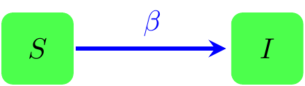
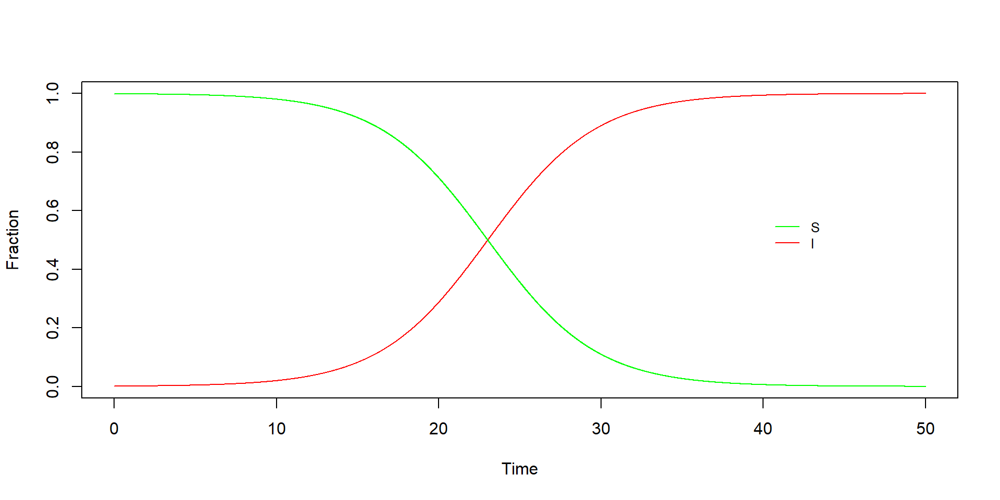
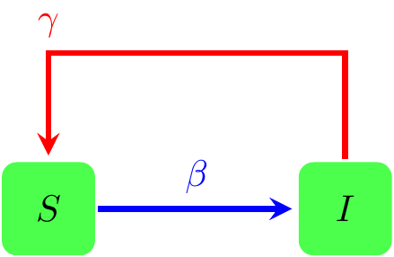
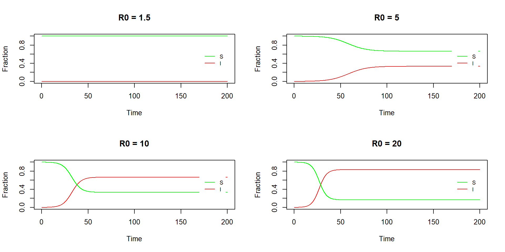
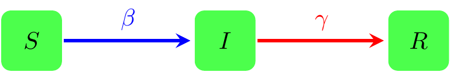
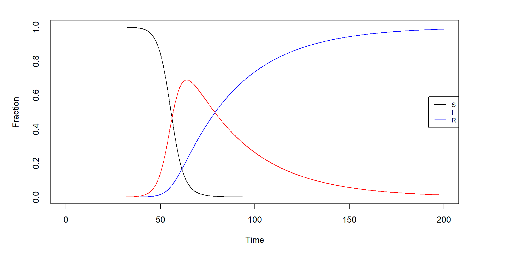
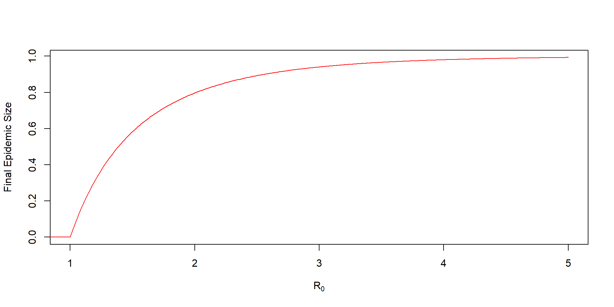

Since Kermack and McKendrick introduced the SIR model in 1927, the mathematical modeling of the spreading of infectious diseases has become a common tool in epidemics.
In this document we will see an introduction to the techniques used in this context which, although, very restrictive give useful insights and the main quantities that are used to understand the behaviour of these processes.
There are three main basic models:
There are many other possible models, like the SIRS, where the recovered individuals may eventually become susceptible again, the SEIR, where we count with the exposure of individuals to the disease or the SEIHFR, where we count with exposure and consider the options Infectious in Community, Infectious in Hospital and Dead but not yet Buried. To mention some.
We are going to focus on the three first ones and specifically later in the SIR-model.
In classical epidemiology there are two main assumptions:
Suppose we have a population of \(N\) individuals, such that at any time instant \(t\) there are \(S(t)\) who are susceptible of getting the disease from the \(I(t)\) already infected. Let’s call \(\beta\) to the probability that an individual gets infected at time t. We can represent this situation as follows

note that if we do not consider the network structure, \(\beta\) is in fact, the probability that any two individuals meet at any time step. Therefore, each susceptible individual meets other \(\beta I\) in that time step.
In the same sense, any infected individual meets other \(\beta N\) individuals of which only a fraction \(S/N\) is susceptible while the rest is already infected. Therefore each individual will infect other \(\beta S/N\), multiplying by the number of infected we obtain the total number of infections per time step as \(\beta IS/N\).
Since we only have two compartments, this number is both, the number of people by which the number of susceptibles descrease adn the number by which the infected increase, this allow us to write the following equations
\[\begin{equation} \left\{ \begin{array}{rcl} \displaystyle\frac{dS}{dt} & = & -\beta I\frac{S}{N} \\[1ex] \displaystyle\frac{dI}{dt} & = & \beta I\frac{S}{N}\\[1ex] \end{array} \right. \end{equation}\]
with the restriction that \(N=S+I\) at all time. This constraint allows for an easy integration of the equations which renders as solution
\[\begin{equation} i(t) = \frac{i_0 e^{\beta t}}{1+i_0(e^{\beta t} - 1)} \end{equation}\]
where we have defined the fractions of infected in the population as \(I(t)/N\) and the initial fraction is \(i_0\). This solution is the usual logistic solution
# General Solution of SI
SI_sol <- function(beta, i0, time){
i = i0 * exp(beta * time)/(1 + i0*(exp(beta * time) - 1))
return(i)
}
# Parameters
time <- seq(0, 50, 0.01)
beta <- 0.3
i0 <- 0.001
# Plot
plot(time, SI_sol(beta, i0, time), type="l",
xlab = "Time",
ylab = "Fraction",
col = "red")
lines(time, 1-SI_sol(beta, i0, time), col = "green")
legend(40, 0.6, legend = c("S", "I"),
lty = c(1,1),
cex = 0.8,
col = c("green", "red"),
box.lty = 0)
One interesting point with this solution are its limits:
\[\begin{equation} i(t)\approx i_0 e^{\beta t} \end{equation}\]
which implies an exponential growth in the fraction of infected.
\[\begin{equation} \lim_{t\to\infty} i(t) \to 1 \end{equation}\]
which implies that in the long run every susceptible individual will be infected.
This second conclusion seems too strong and one may be tempted to think that this model does not describe a real situation. However, many STD (sexual transmission diseases) do follow this type of behaviour. Well known cases are the gonorrhea or HIV. In this model, the epidemic ends only when every susceptible individual gets infected, although, of course, the crucial point here is the proper identification of that susceptible fraction.
In the SI-model we can add an extra condition, namely, that every individual that passes the infection becomes susceptible again, i.e. she does not generate any kind of immunization. Then denoting by \(\gamma\) the recovering probability of an individual we can make the following chart to describe the situation

and from the mathematical perspective, this just means that there is a number of infected individuals recovering, i.e. \(\gamma I\). Since these individuals return to the susceptible state and are, at the same time removed from the infected, we can write the equations as
\[\begin{equation} \left\{ \begin{array}{rcl} \displaystyle\frac{dS}{dt} & = & \gamma I -\beta I\frac{S}{N} \\[1ex] \displaystyle\frac{dI}{dt} & = & \beta I\frac{S}{N} -\gamma I\\[1ex] \end{array} \right. \end{equation}\]
where, again \(N=S+I\). Then we can find the solution to these equations as
\[\begin{equation} i(t)=\left(1-\frac{\gamma}{\beta}\right)\frac{Ce^{(\beta-\gamma)t}}{1+Ce^{(\beta-\gamma)t}} \end{equation}\]
where \(C\) is found from \(i(t=0)=i_0\) as
\[\begin{equation} C = \frac{i_0}{1-i_0-\gamma/\beta} \end{equation}\]
This solution has some interesting properties:
\[\begin{equation} i(t) = 1 - \frac{\gamma}{\beta} \equiv 1 - \frac{1}{R_0} \end{equation}\]
where this \(R_0\) is the basic reproductive number, one of the most relevant quantities in the epidemics analysis, since it represents the average number of susceptible individuals infected by an infected individual during his infectious period, for short, it measures the strength of the infection.
Now, from this equilibrium point we see that there are two possible regimes:
As we see part of the power of \(R_0\) lies in its predictive power, then the estimation of it is a very important part of the analysis of any disease.
Since we can easily see that
\[\begin{equation} i(\infty) = 1 - \frac{1}{R_0} \end{equation}\]
the endemic behaviour as a stable critical point of the solution is achieved for large times, where large depends on the value of \(R_0\), i.e. on the power of the infection. Let’s make a representation of the solution.
# General Solution of SI
SIS_sol <- function(beta, R0, i0, time){
C <- i0/(1-i0-1/R0)
i <- (1-1/R0) * C * exp((1-1/R0)* beta * time)/(1 + C*exp((1- 1/R0) * beta * time))
return(i)
}
# Parameters
time <- seq(0, 200, 0.01)
beta <- 0.3
R0 <- c(1.5, 5, 10, 20)
i0 <- 0.001
# Plot
par(mfrow = c(2,2))
for(r in R0){
plot(time, SIS_sol(beta, beta*r, i0, time), type="l",
xlab = "Time",
ylab = "Fraction",
col = "red",
ylim = c(0,1),
main = paste("R0 =", r))
lines(time, 1-SIS_sol(beta, beta*r, i0, time), col = "green")
legend(170, 0.7, legend = c("S", "I"),
lty = c(1,1),
cex = 0.8,
col = c("green", "red"),
box.lty = 0)}
from the graph we see that the higher the value of \(R_0\), the faster that the endemic state is reached and also the higher the fraction of the population that is infected by the disease, while all of them show the usual exponential behaviour for low values of the infected fraction (short time).
Sometimes, once recovered, the population grows some kind of immunity. If consider it as permanent immunity we fall into the SIR model, in which we have a new state of recovered. In this case the graphical representation is the following

And then now the recovered rate does not go into the susceptible population but in the generation of a new state of recovered, then the system of equations is
\[\begin{equation} \left\{ \begin{array}{rcl} \displaystyle\frac{dS}{dt} & = & -\beta I\frac{S}{N} \\[1ex] \displaystyle\frac{dI}{dt} & = & \beta I\frac{S}{N} -\gamma I\\[1ex] \displaystyle\frac{dR}{dt} & = & \gamma I \\[1ex] \end{array} \right. \end{equation}\]
with \(N=S + I + R\). It is worth to mention that this model is known as the closed epidemic model, where we are assuming a zero or negligible number of births and deaths. The equivalent case for the open epidemic model is
\[\begin{equation} \left\{ \begin{array}{rcl} \displaystyle\frac{dS}{dt} & = & \mu(N-S)-\beta I\frac{S}{N} \\[1ex] \displaystyle\frac{dI}{dt} & = & \beta I\frac{S}{N} -(\gamma+\mu) I\\[1ex] \displaystyle\frac{dR}{dt} & = & \gamma I - \mu R\\[1ex] \end{array} \right. \end{equation}\]
where \(\mu\) is the death rate and \(\mu N\) the birth rate. The integration of this system of equations is harder than the previous ones and in fact it is better to perform a numerical integration. This will be done in the next section with the help of the deSolve package. In any case we can obtain some limits and interesting quantities for the system.
Since all the model depends on the estimation of the parameters \(R_0\), \(\beta\) and \(\gamma\), we need to understand how to do it. Note that in real situations we need a method that is able to return the information we need when the disease is in the very first stages of the its spreading, otherwise it may be intereseting but not useful to help to stop it.
If we want to work with the solutions of the equations, we need to work a bit. For example, dividing the equation for \(s(t)\) by the equation for \(r(t)\) we find that
\[\begin{equation} \log s(t) = \log s_0 - R_0\, r(t) \end{equation}\]
where we have used that \(r_0=0\), i.e. the initial recovery rate is zero. This is just a linear model we can estimate and then obtain the value of \(R_0\).
On the other hand, using the previous equation, we can write that
\[\begin{equation} dt = \int_0^{r(t)}\frac{dx}{1-s_0e^{R_0x}-x} \end{equation}\]
This equation cannot be solve exactly for any time and that is why we will perform later a numerical integration. In the mean time, however, we can approximate for short times, in which case we obtain the following linear model
\[\begin{equation} \log(i(t)) = \log\left(\frac{s_0R_0 + 1}{s_0R_0 -1}\right) + \gamma(s_0R_0 -1)t \end{equation}\]
from where we obtain \(\gamma\) using our previously known \(R_0\). Then with both results we find \(\beta\). Using these modeles for the covid-19 in Spain from 14th, February to 25th March, we can obtain that the values were:
| Parameter | \(\beta\) | \(\gamma\) | \(R_0\) |
|---|---|---|---|
| Value | 0.3352 | 0.0308 | 10.89 |
where we have used that
| \(s_0\) | \(i_0\) | \(r_0\) | |
|---|---|---|---|
| Initial Value | 0.99999996 | 0.00000004 | 0 |
these are the values we will use later to integrate the model. Let’s now interpret what these values tell us
The argument we have used above, needs a complete data set that contains information from each of the compartments (S, I, R). However, in some cases we do not have the recovered (for example, the public datasets from Covid-19 stoped reporting this value due to many different reasons), which proved fundamental to find the value of \(R_0\).
We can use what is called a fast-and-furious estimate of \(R_0\), making use of the Serial Interval, \(v\), the average time between infection and reinfection. This is an experimental data which must be reported or we not be able to use it. The idea is that in the linear model for the regression of the cumulative incidence on time, the slope is the rate of exponential increase, \(r\), then the basic reproductive number is
\[\begin{equation} R_0 = vr+1 \end{equation}\]
For covid-19 there are many different values for the estimation of the serial interval, which makes the use of this procedure a bit inaccurate, in any case, we can take the value of in the 95% CI of [3.5, 5.9] from H.Nishiura, N.M. Linton and A.R. Akhmetzhanov, considering that the slope of our model is 0.3044, then we find
## R0 = 2.0654 2.79596so from 2 to 3. A result that seems more in agreement with the usual SARS.
There are other interesting procedures as the stocastic simulation using the Chain-binomial model, which I recommend you to look at, but we stop here since there is no more time in the course and we still need to go into the application of these models in the context of networks
In this section we are going to use the deSolve package to estimate the curves of the SIR-model. Let’s load the package
The first thing we need is to define the function of the SIR-model as a system of differential equations
SIRmodel <- function(t, y, params){
S = y[1]
I = y[2]
R = y[3]
beta = params["beta"]
mu = params["mu"]
gamma = params["gamma"]
N = params["N"]
dS = mu * (N - S) - beta * S * I/N
dI = beta * S * I/N - (mu + gamma) * I
dR = gamma * I - mu * R
res = c(dS, dI, dR)
list(res)
}Note that we have defined it as an open epidemics, event though now we will set \(\mu\) to 0. Now, let’s define the parameters using our previous findings
times <- seq(0, 200, 1/10)
params <- c(mu = 0, N = 1, beta = 0.3352, gamma = 0.0308)
start <- c(S = 0.99999996, I = 0.00000004, R = 0)
R0 <- params["beta"]/(params["mu"] + params["gamma"])The next step is asking deSolve to solve the system of ordinary differential equations and storing the solution values in a dataframe
with the solution we can easily make the plot as
par(mar = c(5,5,2,5))
plot(x = out$time, y = out$S, ylab = "Fraction", xlab = "Time", type = "l",
ylim = c(0,1))
lines(x = out$time, y = out$I, col = "red")
lines(x = out$time, y = out$R, col = "blue")
legend("right", legend = c("S", "I", "R"),
lty = c(1,1,1),
cex = 0.75,
col = c("black", "red", "blue"))
See that this solution predicts a maximum fraction of infected individuals of the 0.6888 which occurs at
i.e. 63.9 days after the 0-day of our model, or the 17th, April.
## [1] "2020-04-17"Note that all the methods that were used to flatten the curve refer to the fraction of infected in the previous graph and refers to turn the exponential growth into something smoother. What is interesting to observe is that any flattening of the curve does it at the expense of displacing in time the location of the maximum, therefore, the maximum we have found should be thought of as the minimum time required to get to the maximum point.
It is recommended to try using the fast-and-furious estimation to see when the maximum would be.
We denote as final epidemic state as the moment in which the epidemic self-extinguishes. In this moment, denoted by \((I^*, S^*, R^*)\), then \(I^*=0\), \(S^*\) is the fraction of susceptibles that escape infection and \(R^*\) is the final epidemic size.
For the close epidemic model, Swinton found an exact formula for the final epidemic size, given by
\[\begin{equation} s^* = e^{-R_0(1-s^*)} \end{equation}\]
an implicit equation that can be solved numerically using uniroot. We can use it to see the dependency of the final epidemic size with \(R_0\) as
impl_eq <- function(x, R0){
exp(-R0*(1-x))-x
}
R0 <- seq(1, 5, 0.01)
root <- vector('numeric', length = length(R0))
for(i in 1:length(R0)){
root[i] <- 1 - uniroot(impl_eq, lower = 0, upper = 1-1e-9,
tol = 1e-9, R0 = R0[i])$root
}
plot(R0, root, type="l", col = "red",
ylab = "Final Epidemic Size",
xlab = expression('R'[0]))
segments(0,0,1,0, col="red")
this graph should remind us of the size of the giant component in a Poisson (random) network. Let’s see what is the value in our estimated model.
## [1] 0.9999814then the final epidemic size is 99.9981%, and then the fraction of population that will escape the infection is 1.910^{-5}. Again, this changes significantly when we consider the fast-and-furious approximation
a <- 1 - uniroot(impl_eq, lower = 0, upper = 1-1e-9,
tol = 1e-9, R0 = 2.0654)$root
b <- 1 - uniroot(impl_eq, lower = 0, upper = 1-1e-9,
tol = 1e-9, R0 = 2.79596)$root
cat(a, b)## 0.8137663 0.9246188and the final epidemic size goes from 81.38% to 92.43%. Close but not as extreme as the previous value.